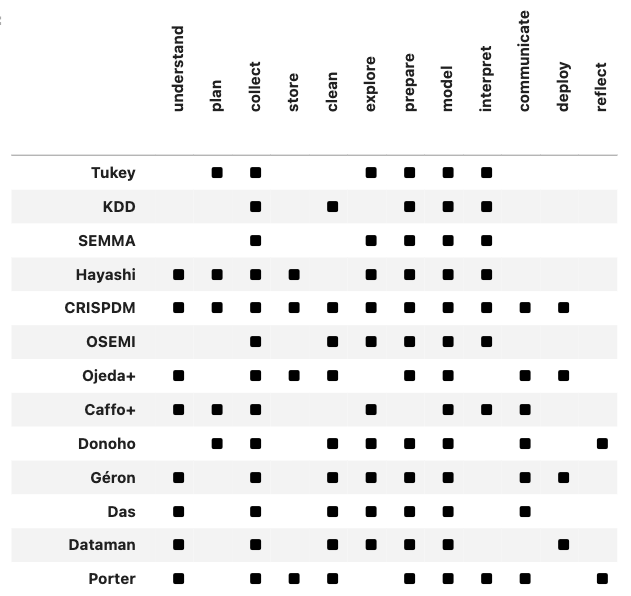

Primary Sources
About the Sources
The primary sources on which the conclusions of this essay are based comprise a variety of documents, from technical journals to blog posts to internal reports. They come from a range of viewpoints, from data analysis and statistics to data mining and data science per se. For the purposes of the essay, we select a more or less representative subset across these axes of variation. With respect to representativeness, in some cases a document was chosen for its influence, in others, such as the post by Dataman, because it is considered more or less typical of a common genre.
The documents chosen are listed below in chronological order, beginning with Tukey’s seminal essay on data analysis and ending with contempory explainers. Included also are the definitions of the CRISP-DM and KDD processes which are the most developed pipeline models.
Each source entry below contains a short description of the source and its context, and then a list of the phases cited by the authors as fundamental to data processing. These phases are also mapped onto the standard sequence described in the main part of this essay, listed here for convenience.
- Understand
- Plan
- Collect
- Store
- Clean
- Explore
- Prepare
- Model
- Interpret
- Communicate
- Deploy
- Reflect
Mappings are indicated by an arrow pointing to the subset of terms from the standard sequence, e.g. … \(\rightarrow [Explore]\) These mappings are also aggregated into a composite pipeline and displayed the table below; each model row is referenced by its key as defined in the entries.
Note that in most cases these phases are explicitly described as a process and often as a pipeline. When they are not, the implication is strong. In some cases, the process is likened to a cycle, emphasizing the connection between the endpoints of the pipeline, which is also emphasized by the 4+1 model.
A final feature added to each entry is a two-value indicator of bias — statistics and data mining. This is meant to capture the intellectual origin of the model, given that statistics and data mining define the poles of one of main axes of variance that defines the field of data science. This difference roughly corresponds to the “two cultures” described by Breiman @breimanStatisticalModelingTwo2001.
List of Sources
Tukey on Data Analysis
Key: Tukey
Year: 1962
Source: @tukeyFutureDataAnalysis1962 URL
Bias: Statistics
In this classic essay, Tukey introduces the concept of data analysis, which he distinguishes from mathematical statistics and likens to an empirical science. He defines data analysis as an empirical process with phases including “… procedures for analyzing data, techniques for interpreting the results of such procedures, ways of planning the gathering of data to make its analysis easier, more precise or more accurate, and all the machinery and results of (mathematical) statistics which apply to analyzing data” (p. 2). Unpacking this statement yields a four phase model.
- Planning: This phase includes “ways of planning the the gather of data to make its analysis easier.” \(\rightarrow [Plan]\)
- Gathering: The gathering of data, either through creation or by acquisition of “data already obtained” (p. 40). Includes also the shaping of data “to make its analysis easier,” which corresponds to our concept of Preparation. \(\rightarrow [Collect, Prepare]\)
- Analyzing: This is where data are analyzed with “all the machinery and results of (mathematical) statistics.” \(\rightarrow [Explore, Model]\)
- Interpreting: “techniques for interpreting the results of” analysis. \(\rightarrow [Interpret]\)
Fayyad on KDD
Key: KDD
Year: 1996
Source: @fayyadKnowledgeDiscoveryData1996 URL→
Bias: Data Mining
KDD, or Knowledge Discovery in Databases, emerged in the late 1980s as both datasets and the computational resources to work with them became abundant. These resources included commercial databases and personal computers. In many ways the most adjacent field to contemoporary data science, this approach is unabashedly dedicated to finding patterns in data prior to developing a probabilistic model to justify their use. Fayyad’s essay identifies five steps [@fayyadKnowledgeDiscoveryData1996: 84]. He emphasizes the highly iterative and cyclical nature of the process, arguing that it “may contain loops between any two steps.” Another significant aspect of this conception of the pipeline is the role of exploration in the analytical phase: “Data Mining is a step in the KDD process consisting of applying data analysis and discovery algorithms that, under acceptable computational efficiency limitations, produce a particular enumeration of patterns over the data ….” (p. 83)
- Selection: Creating a target data set, or focusing on a subset of variables or data samples, on which discovery is to be performed. \(\rightarrow [Collect]\)
- Pre-processing: Cleaning and pre processing the data in order to obtain consistent data. \(\rightarrow [Clean]\)
- Transformation: Transformation of the data using dimensionality reduction and other methods. \(\rightarrow [Prepare]\)
- Data Mining: Searching for patterns of interest in a particular representational form, depending on the DM objective (usually, prediction). \(\rightarrow [Model]\)
- Interpretation/Evaluation: Interpretation and evaluation of the mined patterns. \(\rightarrow [Interpret]\)
Azevedo on SEMMA
Key: SEMMA
Year: 1996
Source: @azevedoKDDSEMMACRISPDM2008
Bias: Statistics
The SEMMA model was developed the by SAS institute in 1996 as part of the documentation for their product, SAS Enterprise Miner. Even so, the model is referenced outside of this context, often as a comparison to KDD and CRISP-DM. Its bias towards statististics is evident in the first step.
- Sample: Sampling the data by extracting a portion of a large data set big enough to contain the significant information, yet small enough to manipulate quickly. \(\rightarrow [Collect]\)
- Explore: Exploration of the data by searching for unanticipated trends and anomalies in order to gain understanding and ideas \(\rightarrow [Explore]\)
- Modify: Modification of the data by creating, selecting, and transforming the variables to focus the model selection process \(\rightarrow [Prepare]\)
- Model: Modeling the data by allowing the software to search automatically for a combination of data that reliably predicts a desired outcome. \(\rightarrow [Model]\)
- Assess: Assessing the data by evaluating the usefulness and reliability of the findings from the DM process and estimate how well it performs. \(\rightarrow [Interpret]\)
Hayashi on Data Science
Key: Hayashi
Year: 1998
Source: @hayashiDataScienceClassification1998 URL→
Bias: Statistics
The Japanese statistician Chikio Hayashi adopted the term “data science” in the early 1990s to define a field that did not succumb to what he saw to be the errors of both statistics and data analysis. He argued that mathematical statistics had become too attached to problems of inference and removed from reality, while data analysis had lost interest in understanding the meaning of the data it deals with. His definition of data science is decidely processual: “Data Science consists of three phases: design for data, collection of data and analysis on data. It is important that the three phases are treated with the concept of unification based on the fundamental philosophy of science …. In these phases the methods which are fitted for the object and are valid, must be studied with a good perspective.” (p. 41) Similar to KDD and CRISM-PM, Hayashi envisioned this process as a spiral, oscillating between poles if what he called “diversification” and “simplification.” Note also that each of these terms, as described, comprises more than on of the standard sequence phases.
- Design: Surveys and experiments are developed to capture data from “multifarious phenomena.” \(\rightarrow [Understand, Plan]\)
- Collection: Phenomena are expressed as multidimensional or time-series data; properties of the data are made clear. At this stage, data are too complicated to draw clear conclusions. (Representation) \(\rightarrow [Collect, Explore, Prepare]\)
- Analysis: By methods of classification, multidimensional data analysis, and statistics, data structure is revealed. Simplification and conceptualization. Also yields understanding of deviations of the model, which begins the cycle anew. (Revelation) \(\rightarrow [Model, Interpet]\)
Wirth and Hipp on CRISP-DM
Key: CRISPDM
Year: 1999
Source: @wirthCRISPDMStandardProcess1999 URL→
Bias: Data Mining
By the late 1990s, the practice of data mining had become widespread in industry and globally. In 1999 the Cross Industry Standard Process for Data Mining (CRISP-DM) was developed in Europe as a comprehensive and general model to support the use of data mining in a broad range of sectors in a principled manner. Designed to work within a project management framework, this model is by far the most developed, and it continues to influence the field of data science to this day. Like KDD before it, the model emphasizes the cyclic and recursive nature of the process, and this perspective is reflected in the circular diagram that often accompanies its presentation. The steps below are based on the summary presented in Wirth and Hipp’s essay.

- Business Understanding: Understanding project objectives and requirements from a business perspective. Includes the development of a plan. \(\rightarrow [Understand, Plan]\)
- Data Understanding: The initial data collection and activities to get familiar with the data, e.g. to identify data quality problems, to discover first insights into the data, or to detect interesting subsets to form hypotheses for hidden information. This is really two phases — Collection and Exploration — which are combined because of their close, iterative relationship. \(\rightarrow [Collect, Explore]\)
- Data Preparation: Construction of the final dataset for analytical use. Tasks include table, record, an attribute selection, data cleaning, construction of new attributes, and transformation of data for modeling tools. \(\rightarrow [Clean, Prepare]\)
- Modeling: Modeling techniques are selected and applied, parameters calibrated. Modeling techniques include a broad range of unsupervised and supervised methods. As with KDD, there is an emphasis on pattern discovery, which has the effect of promoted methods that other models place squarely in the Explore phase of the standard sequence. \(\rightarrow [Model]\)
- Evaluation: Evaluation of model performance by both intrinsic and extrinsic measures. Regarding the latter, a key objective is to determine if an important business issue has not been sufficiently considered. \(\rightarrow [Interpret]\)
- Deployment: The knowledge gained by the model is presented in a way that the customer can use it. This may be something as simple as a report or as complex as a repeatable data mining process. In many cases the user, not the data analyst, will carry out the deployment. \(\rightarrow [Deploy]\)
Mason and Wiggins on OSEMI
Key: OSEMI
Year: 2010
Source: @masonTaxonomyDataScience2010 URL→
Bias: Data Mining
After the phrase “data science” went viral (circa 2009), there were many efforts to make sense of the idea. In 2010 Drew Conway posted his Venn diagram of data science [@conwayDataScienceVenn2010]. The same year, another influential model, based explicitly on the pipeline, came from Mason and Wiggins in a blog post hosted at O’Reilly’s Tech Radar site. In contrast to previous models rooted in statistics, this model assumes that data are abundant and available, such as data scrapable from the Web.
- Obtain: Gather data from relevant sources through APIs, web scraping, etc. \(\rightarrow [Collect]\)
- Scrub: Clean data and convert data to machine readable formats. Clearning includes handling missing data, inconsistent labels, or awkward formatting; stripping extraneous characters; normalizing values, etc. \(\rightarrow [Clean, Prepare]\)
- Explore: Find significant patterns and trends using statistical and data analytic methods, such as visualizing, clustering. Also includes transformations of the for more effective analysis, such as dimensionality reduction. \(\rightarrow [Explore]\)
- Model: Construct methods to predict and forecast. These methods include those of inferential statistics and predictive machine learning. \(\rightarrow [Model]\)
- Interpret: Making sense of the results as well as evaluating the performance of models. May involve domain experts. Also includes methods such as regularization that make models interpretable to those who use them, e.g. scientists or business people. \(\rightarrow [Interpret]\)
Ojeda, et al. on Data Science
Key: Ojeda+
Year: 2014
Source: @ojedaPracticalDataScience2014 URL→
Bias: Data Mining
By 2014, data science had become a widespread practice in industry and the academic, and explanations of its nature became the subject of many books. This text is one of a genre that presents the field as a process, perhaps due to the influence of the CRISP-DM and OSEMI models, and uses the expression pipeline throughout. Note that the model defined in this book is not presented here as canonical. It suffers from various inconsistences, such as the labeling of steps in the text representation of the pipeline versus those on diagrams. It is included to demonstrate the pervasiveness of the model.
- Acquisition: Acquire the data from relational databases, NoSQL and document stores, web scraping, distributed databases (e.g. HDFS on a Hadoop platform), RESTful APIs, flat files, etc. Consistent with the other data mining models, the emphasis here is on working with available data, not generating it. \(\rightarrow [Collect]\)
- Exploration and understanding: Understand the data and how it was collected or produced; this often requires significant exploration. Note that this step does not correspond to exploration in the sense of exploratory data analysis (EDA). Rather, it reflects the position of the data scientist as the receiver of someone else’s data and the need to infer what would normally belong to the first step of the standard squence \(Understand\). \(\rightarrow [Understand]\)
- Munging, wrangling, and manipulation: Convert the data into the form required for analysis. This includes a wide range of activities, such as those mentioned in previous models. However, it also conflates the standard phases \(Clean\) and \(Prepare\). \(\rightarrow [Clean, Prepare]\)
- Analysis and modeling: Apply statistical and machine learning methods, including clustering, categorization, and classification. One presumes that the standard step of \(Explore\) is included here. \(\rightarrow [Explore, Model]\)
- Communicating and operationalizing: At the end of the pipeline, we need to give the data back in a compelling form and structure, sometimes to ourselves to inform the next iteration, and sometimes to a completely different audience. The data products produced can be a simple one-off report or a scalable web product that will be used interactively by millions. \(\rightarrow [Communicate, Deploy]\)
Caffo, et al. on Data Science
Key: Caffo+
Year: 2015
Source: @caffoExecutiveDataScience2015 URL→
Bias: Statistics
By 2015, many universities had begun offering degrees in data science, typically at the masters’ level, with the intention of meeting the high demand for data scientists. Professors Caffo, Peng, and Leek’s book was written to accompany a course in Exectutive Data Science, offered by Johns Hopkins University through Coursera. Their model is relatively high level, consisting of five phases, given the target audience of those in charge of data science teams. As with other models, this model emphasizes the iterative nature of each phase, both internally and between phases. And as with many statistics-oriented conceptions of data science, this model emphasizes the Understand phase and skips over the technical issues of storing and modeling the data.
- Question.: Pose a research question and specify what is to be learned from data to answer it. The question determines the data to be obtained and the type of analysis to perform. Included determing the type of question, including descriptive, exploratory, inferential, causal, predictive, and mechanistic. An alternate approach here is hypothesis generation, which may be suitable when data already exist but a question is not well-developed. In this scenario, the data scientist may skip to the next step to determine the value of the data. Once a question is developed, then it may be necessary to acquire more data, and then go through the process. \(\rightarrow [Question, Collect]\)
- Exploratory data analysis: Explore the data to determine if the data are suitable for answering the question and if more data need to be collected. For example, determine if there are enough data and if it is missing key variables. In addition, develop a sketch of the solution. Include a freamework for challenging results and to develop robust evidence for answering your question. \(\rightarrow [Explore]\)
- Formal modeling: Identify the parameters to estimate based on the sketch. \(\rightarrow [Model]\)
- Interpretation: Determine if the modeling results align with the initial expections during the Question phase and before the acquisition of data. Consider the totality of the evidence developed after attempting to fit different models, weighing the different pieces of evidence. \(\rightarrow [Interpret]\)
- Communication: Communicate findings to various audiences, either internal to the organization or external. Includes translating findings into action by virtue of effectively communicating results to decision-makers. \(\rightarrow [Communicate]\)
Donaho on Data Science
Key: Donoho
Year: 2017
Source: @donoho50YearsData2017 URL→
Bias: Statistics
As data science became viral in the 2010s, academic statisticians frequently expressed concern that they were “disconnected from the new (and vaguely defined) community of data scientists, who are completely identified with Big Data in the eyes of the media and policymakers” [@rodriguezBigDataBetter2012]. “Aren’t We Data Scientists?” asked Marie Davidian, then president of the American Statistical Association, in 2013 [@davidianArenWeData2013]. In response to this growing sentiment, Donoho’s essay reads as a manifesto for the reclaiming of data science by academic statistics. In it, he defines six divisions of Greater Data Science, each containing a set of subactivities that roughly map to the pipeline model described here.
It is important to note that Donoho’s model is more abstract than a pipeline description and therefore not all of the divisions and subactivities directly map onto the sequence. Data visualization and Presentation defines a general practice, although from the description it clearly maps onto two phases, Explore and Communicate. Computing with Data refers to knowledge of programming languages for data analysis and data processing as well as knowledge of how to use cluster and cloud computing resources at scale. It also includes how to develop workflows which organize work. Clearly, this area belongs to no phase in particular but instead characterizes the broader context in which the data science pipeline operates. The identification of workflows, which are the focus of the Science about Data Science division, also suggests that Donoho is working at a higher level of abstraction than the other models, which places it alongside the of the current essay. The following phases are inferred from Donoho’s descriptions.
- Gathering: This includes both experimental design, modern data gathering techniques, and identification of existing data resources, from signal data to websites. \(\rightarrow [Plan, Collect]\)
- Preparation: Identification of anomalies and artifacts in the data and handling them by reformatting, recoding, grouping, smoothing, subsetting, etc. \(\rightarrow [Clean]\)
- Exploration: Application of EDA to sanity-check data and expose unexpected features. Includes data visualization, which Donoho separates out into a separate division and combines with visualization activities involved in interpretation and communication. \(\rightarrow [Explore]\)
- Modern Databases: Transform and restructure data as found in source files, such as CSV files and spreadsheets, and databases, into a forms more suitable for analysis. \(\rightarrow [Prepare]\)
- Mathematical Representations: Application of mathematical structures for to extract features from special kinds of data, including acoustic, image, sensor, and network data. For example, the application of the Fourier transform to acousting data or the wavelet transform to image data. \(\rightarrow [Prepare]\)
- Data Modeling: Appliction of methods from both traditional statistics and contemporary machine learning. \(\rightarrow [Model]\)
- Presentation: The creation of sophisticated graphics, dashboards, and visualizations to present conclusions to stakeholders. \(\rightarrow [Communicate]\)
- Science about Data Science: In the spirit of Tukey’s “science of data analysis,” this is the evaluation of what data scientists actually do and produce. Includes the identificatin and study of commonly occurring analytical and processing workflows. \(\rightarrow [Reflect]\)
Géron on Machine Learning
Key: Géron
Year: 2017
Source: @geronHandsOnMachineLearning2017 URL→
Bias: Data Mining
Géron’s text is a classic among practicing data scientists interested in using machine learning in a business setting, covering everything from regression to deep learning from a practical, code-centric perspective. Written with “minimal theory,” the book demostrates the entrenched nature of the pipeline model, especially as it has been become a software development pattern hard-coded into both SciKit Learn and TensorFlow. This usage reflects the fact that within machine learning, “pipeline” has taken on a more specific meaning — “a sequence of data processing components” — than we are using here. These components are units software within a system, not the phases of labor associated with the work of the data scientist. Nevertheless, Géron’s text describes a labor pipeline within which the software pipeline is embedded, the steps of an “end-to-end” classification project.
- Look at the big picture: Frame the problem by defining the business objective and the specific goals of the model. This may include defining a specific performance measure, such as a loss function. Consider that the model is a a means to an end. \(\rightarrow [Understand]\)
- Get the data: This consists of setting up a compute workspace and downloading the data. This step also includes getting to know the data and preparing a test set. \(\rightarrow [Get, Prepare]\)
- Discover and visualize the data to gain insights: Go into more depth exploring the data, using EDA methods to investigate correlations and experiment with attribute combinations. \(\rightarrow [Explore]\)
- Prepare the data for Machine Learning algorithms: This step involves transforming and structuring the data in forms suitable for the algorithms that with fit the data to a model. This includes imputing missing data, handling non-numeric data, feature scaling, etc. This step contains its own pipeline. \(\rightarrow [Clean, Prepare]\)
- Select a model and train it: Apply models deemed appropriate to the data and compare results. Apply evaluation methods such as cross-validation to compare model results. \(\rightarrow [Model]\)
- Fine-tune your model: Once the list of candidate models is shortened, fine-tune their parameters by using various seach methods, e.g. grid, randomized, or ensemble. Also includes evaluating the models on test sets. \(\rightarrow [Model]\)
- Present your solution: : This step includes presenting to stakeholders what was learned, what worked and what did not, what assumptions were made, and what the system’s limitations are. It also includes documenting everything, creating user-friendly presentations with clear visualizations and easy-to-remember statements. Géron refers to this as the “prelaunch phase,” presumably because the component must be approved to go on to the next phase. \(\rightarrow [Communicate]\)
- Launch, monitor, and maintain your system: This step includes converting your model into a production-ready component that can become a functioning piece of the overall pipeline. This may mean creating a web service. \(\rightarrow [Deploy]\)
Das on Data Science
Key: Das
Year: 2019
Source: @dasDataScienceLife2019 URL→
Bias: Data Mining
This essay belongs to a genre of self-publication that attempts to explain concepts in data science to the public. It is typical of platforms like Medium and what used to be called the blogosphere. It is included here to represent the commonplace nature of the pipeline as a rhetorical device for explaining data science. Here, the pipeline is called a “life-cycle,” although the term pipeline is used as well. The cyclical nature of the process is emphasized by including the first step as last step of the process. [Note that this essay was removed from the web by the author; a link to Internet Archive URL is included for completeness.]
- Business Understanding: Understand the problem you are trying to solve and how data can be used to support a solution or decision. Identify central objectives and variables that need to be predicted. (Here the author implies that methods such as regression and clustering are objectives.) \(\rightarrow [Understand]\)
- Data Mining: Gathering the data from various sources. This may invovle extracting data from a legacy database or webscraping. The author correctly notes that this step should not be lumped together with cleaning. \(\rightarrow [Collect]\)
- Data Cleaning: This step includes cleaning and preparing the data, also know as “data janitor work.” This step takes most of the data scientist’s time because there are so many reasons that data may need cleaning. Also includes handling missing data.
\(\rightarrow [Clean]\) - Data Exploration: This is the brainstorming phase of data analysis, where one discovers patterns and biases in the data. Involves using the basic tools of EDA but also creating interactive visualizations to allow drilling down into specific points, e.g. to explore the story behind outliers. Here also one begins to form hypotheses about the data to be developed. \(\rightarrow [Explore]\)
- Feature Engineering: This is the process of using domain knowledge to transform the data into informative features that represent the business problem. This stage directly influences the accuracy of the predictive model constructed in the next stage. Methods include feature selection (i.e. dimensionality reduction) and constructing new features that will aid in the modeling process. \(\rightarrow [Prepare]\)
- Predictive Modeling: The application of machine learning methods to the data. Includes training several models and evaluating their performance, as well as applying statistical methods and tests to ensure that the outcomes from the models make sense and are significant. Based on the questions developed in the business understanding stage, this is where a model is selected. Model selection will depend on the size, type and quality of the data, availability of computational resources, and the type of output required. \(\rightarrow [Model]\)
- Data Visualization: This step combines expertise from the fields of communication, psychology, statistics, and art, with an ultimate goal of communicating the insightw from the model in a simple yet effective and visually pleasing way. \(\rightarrow [Communicate]\)
Dataman on Data Science
Key: Dataman
Year: 2020
Source: @datamanDataScienceModeling2020 URL→
Bias: Data Mining
Another example of a self-published explainer essay, this one describes the data science “modeling process” and aligns it with six consultative roles. The other defines eight steps to the process. Curiously, althhough this pipeline focuses on the details of training models, it does not include training the model itself as a step.
- Set the objectives: This step includes defining the goals of the model as well as its scope and risk factors. These will determine what data to collect, and whether the cost to collect the data can be justified by the impact of the model. \(\rightarrow [Understand]\)
- Communicate with key stakeholders: This step involves ongoing aligning expected outcomes with key stakeholders. This step is unique among the pipelines by being place so early in the process. We associate it with the \(Understand\) phase because it essentially broads the group for whom understanding matters. \(\rightarrow [Plan]\)
- Collect the necessary data for exploratory data analysis (EDA): This step combines the \(Collect\), \(Clean\), and \(Explore\) phases. Involves the iterative “curation” of data need to conduct EDA. \(\rightarrow [Collect, Clean, Explore]\)
- Determine the functional form of the model: In this step, the specific from of the model is defined, including the definition and characterization of the target variable. This step involves model selection and would in practice be closely associated with the next. \(\rightarrow [Prepare, Model]\)
- Split the data into training and validation This step is concerned with model validation and avoiding overfitting. Data are divided into training and test datasets. It is assumed that test data were separated out prior to the preceding step. Presumably this step includes fitting the models, but this is not explicit. \(\rightarrow [Prepare, Model]\)
- Assess the model performance: This step includes determining the stability of a model over time (generalizability), focusing on the overall fit of the model, the significance of each predictor, and the relationship between the target variable and each predictor. Includes measures such as lift. Clearly this step follows the process of fitting and tuning models. \(\rightarrow [Model]\)
- Deploy the model for real-time prediction: The deployment of machine learning models into production, e.g. via batch prediction as a webservice. \(\rightarrow [Deploy]\)
- Re-build the model: This step involves revisiting the pipeline as models lose their predictability due to a variety of causes. Effectively, this step asserts the cyclic and interative nature of the pipeline and therefore belongs to no step in particular.
Porter on Data Science
Key: Porter
Year: 2020
Source: @porterFrameworkDataScience2020
Bias: Statistics
Michael Porter is an Associate Professor of Data Science and Systems Engineering at the UVA. This essay is an internal report (available on request) on the field of data science from the perspective of curricular planning. Porter argues that Data Science includes seven areas, each of which can be viewed as a science, i.e. as requiring specific expertise. Like Donoho’s essay (and the current), the model presented is more abstract than a pipeline model and includes areas that cross-cut steps in the Primary Sequence. Nevertheless, it retains a sequential structure consistent with the general pattern.
- Data Collection and Acquisition: The science of “how” and “when” data is collected, and includes all methods of data acquisition from its production through designed experiments to its consumption from external sources, e.g. databases and APIs. \(\rightarrow [Collect]\)
- Data Storage and Representation: The science of “how” and “when” data is collected, including data modeling and storing data in databases and files of various formats. Also includes transforming data into “tidy” format. \(\rightarrow [Store]\)
- Data Manipulation and Transformation: The science of preparing data for analysis, including wrangling, cleaning, and importing data from databases (after they have been stored in the previous step). \(\rightarrow [Clean, Prepare]\)
- Computing with Data: The science of computing for data analysis with a focus on algorithm design and performance evaluation. \(\rightarrow [Model]\)
- Data Analytics: The science of machine learning, broadly conceived to include methods ranging from geneative modeling (either frequentist or Bayesian) and inference to predictive modeling and optimization. Notably, this step also includes EDA and feature engineering. \(\rightarrow [Explore, Prepare, Model]\)
- Summarizing and Communicating Data and Models: The science of extracting and summarizing the information in data for human understanding. This area includes visualization in the context of both EDA and presentation of results to external stakeholders. It also includes the communication of model and data properties (such as bias) to guide interpretation of results. Here we map it to the latter, but note that this area includes at least two steps. In addition, we may may the work of summarization to interpretation. \(\rightarrow [Interpret, Communicate]\)
- Practicing Data Science: The science of the overall system of data science, including improving the data science spipeline, replicability of results, openness and transparency, project management, etc. \(\rightarrow [Reflect]\)
- Disciplinary Data Science: The science of applying data science to specific disciplines. This involves a consideration of how the pipeline operates in different contexts, including how domain knowledge informs each of the steps of the pipeline, from mode of data acquisition to model selection and analytic appraoch, to the interpretation and communication of results. Although placed at the end of the list, it properly belongs to the initial \(Understand\) step. \(\rightarrow [Understand]\)
Summary Table
